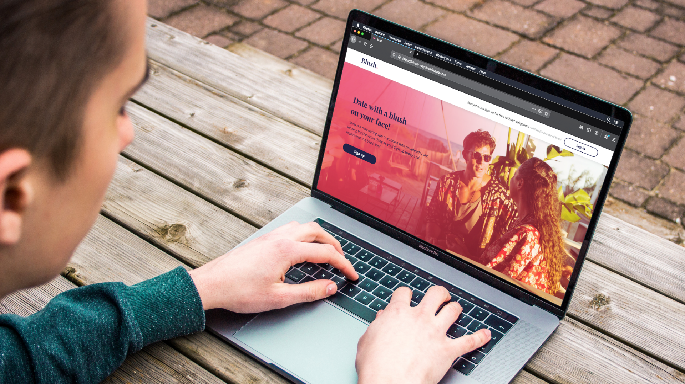
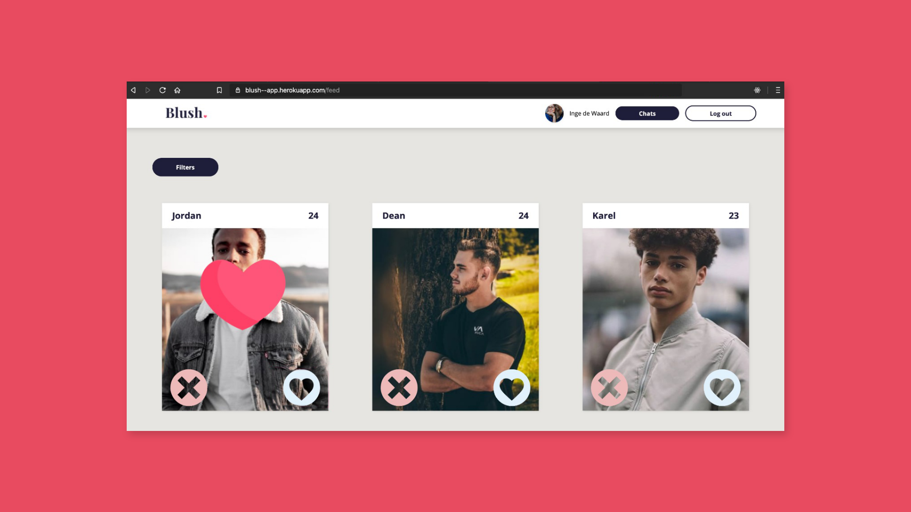
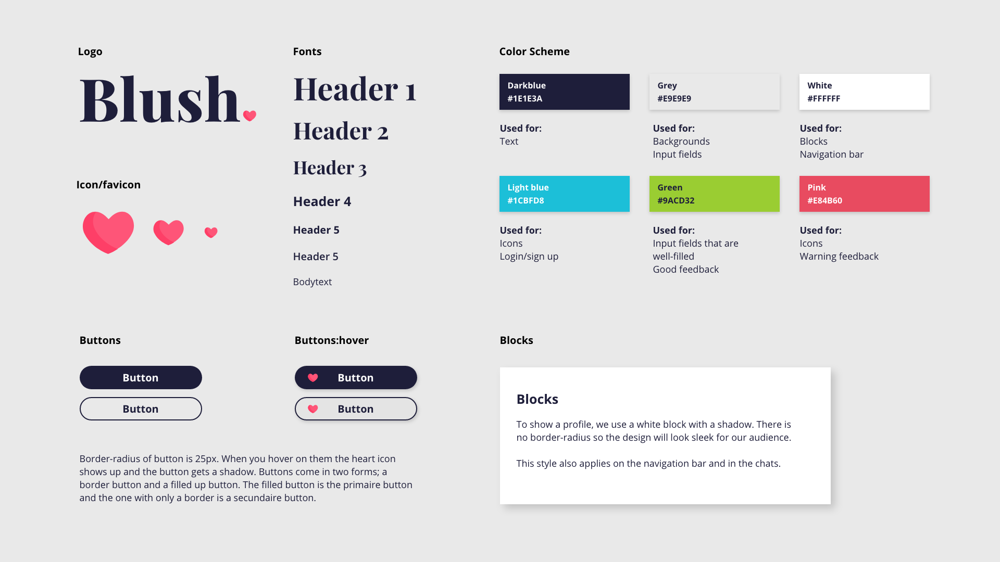
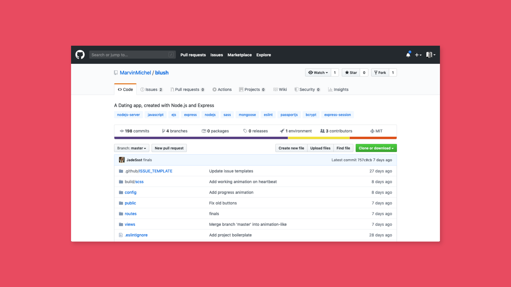

De opdracht
Ontwikkel een dating app in een team. Ieder maakt zijn eigen feature met Node.js en Express en deze worden in een dating app samengevoegd.
Blush
De naam voor onze datingapp is Blush. Het is kort en krachtig met een romantische tint. Iedereen wil de blush ervaren die wij 'garanderen' met onze app.
Style guide
De stijlguide is gebaseerd op onderzoek naar andere datingapps. De kleur blauwe kwam verassend vaak terug, vaker zelf dan rood/roze tinten. Dit komt doordat blauw een serieuzere indruk geeft en doelgroepen als hogeropgeleiden aantekken. De rood/roze tint is wel te zien bij Tinter en Parship.
Github
Bij dit project lag de focus op de code en het teamwerk op Github. We hebben gewerkt met branches, issues en pull requests waarin we elkaars code reviewden. Het project op Github is te vinden op deze repository.
Deployment
Voor backend ging ik onderzoeken wij onze app online konden krijgen (ook wel deployen genoemd). Hieruit bleek de handigste mogelijkheid Heroku te zijn. Je kunt zowel via je Github repository als via de terminal met CLI (command line interface) je project connecten aan Heroku. Dus dat is erg handig! Vind ons eindwerk op blush--app.herokuapp.com.